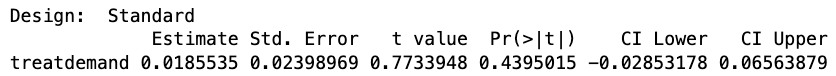

| Estimate | Standard Error | p-value | |
|---|---|---|---|
| Vaccine A | -90% | 30% | 0.001 |
| Vaccine B | -89% | 2% | 0.001 |
Week 9 Lecture 2
How is survey design/data collection going? (email me your survey form/dataset by tomorrow night for full credit!)
In 95% of iterations of a given experiment, the confidence interval will contain the true average treatment effect.
| Estimate | Standard Error | p-value | |
|---|---|---|---|
| Vaccine A | -90% | 30% | 0.001 |
| Vaccine B | -89% | 2% | 0.001 |
| Estimate | Standard Error | p-value | 95% Confidence Interval |
|
|---|---|---|---|---|
| Vaccine A | -90% | 30% | 0.001 | [-100%, -31%] |
| Vaccine B | -89% | 2% | 0.001 | [-93%, -85%] |
Imagine two experiments, one on Letter A and one on Letter B, trying to understand their effects on voter turnout:
| Experiment | Estimate | Standard Error | 95% Confidence Interval |
|---|---|---|---|
| Experiment 1: Letter A | 8% | 30% | [-50%, 66%] |
| Experiment 2: Letter B | 5% | 1% | [3%, 7%] |
| Variable | Description |
|---|---|
| unique_id | Precinct ID |
| treat | Treatment variable |
| 'control' | Control group |
| 'supply' | Supply group: party chair instructed to recruit 2-3 women |
| 'demand' | Demand group: party chair reads letter at precinct convention |
| 'both' | Both treatments: party chair instructed to read letter and to recruit 2-3 women |
| prop_sd_fem2014 | Proportion of 2014 elected state delegates from the precinct who were women |
| sd_onefem2014 | 1 if at least one woman was selected; 0 otherwise |
| county | County name in Utah |
| pc_male | 1 if precinct chair is male; 0 otherwise (the chair runs the precinct meeting and reads the letter if assigned) |

difference_in_means()If we rolled out the “demand” treatment to 500 precincts, how many more precincts would we expect to elect at least one woman?
\[ \small \begin{aligned} &\text{Expected N. units with different outcomes} \\ &= \text{N. units treated} \times \text{Estimated effect per unit} \end{aligned} \]
difference_in_means() gives you the lower and upper bounds of a 95% confidence interval